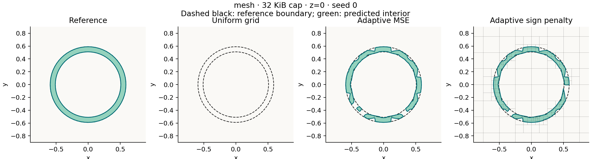
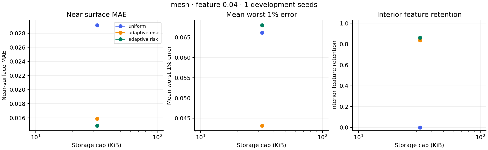

Development evidence for adaptive distance-field compression under a shared byte cap.
CVaR99 is the mean of the worst 1% absolute errors. Feature scores are known-point diagnostics. Timings are warm serial CPU batch averages; storage excludes build scratch space and allocator overhead. These plots do not certify topology.

